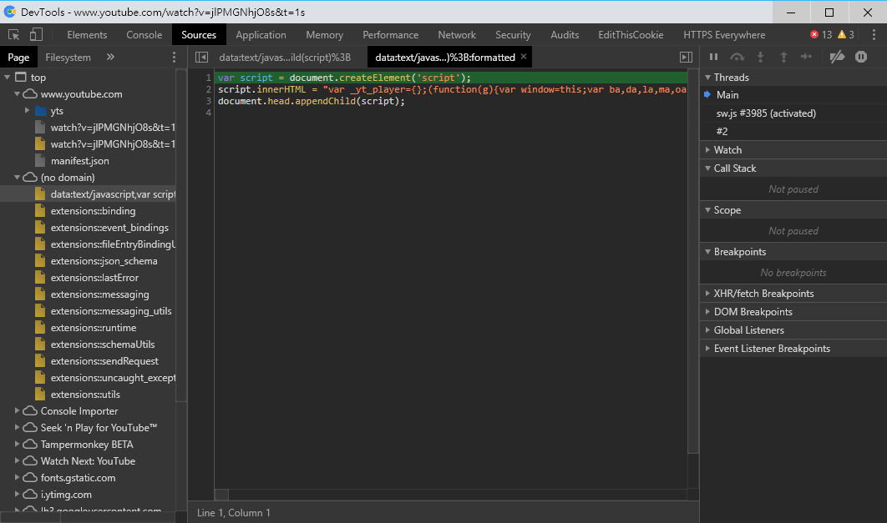
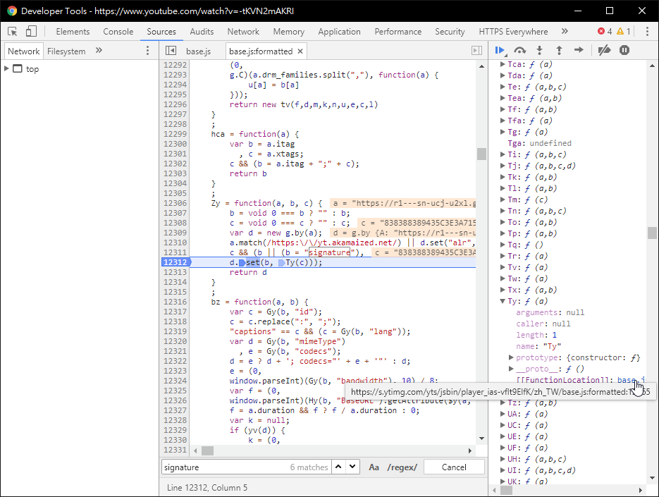
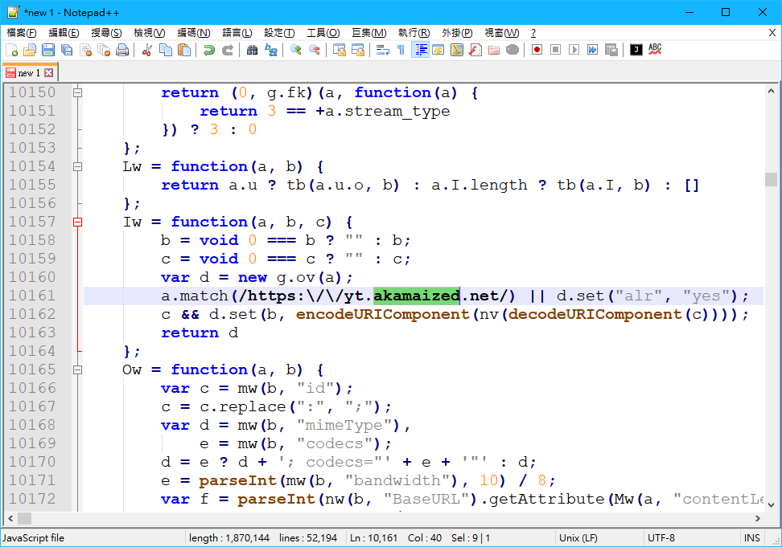

只要 google YouTube 下載 隨便就能找到很多網站讓你能下載影片
不過我不久前就很好奇要怎樣才能取得 yt 影片的真實網站，因此就花了點時間去研究原理
而我最後把它做成一個簡單的 api 伺服器，改一下應該也能當成 npm module 來發布
GitHub: maple3142/ytdl
而這篇文章會簡單的講是怎麼下載 yt 影片的
取得影片資訊
YouTube 官方有個 api 叫 get_video_info 可以取得一些影片的資訊，裡面當然也包括了影片網址1
http://www.youtube.com/get_video_info?video_id=VIDEOID&el=embedded&ps=default&eurl=&gl=US&hl=en
裡面的
VIDEOID是指影片的 id
例如https://www.youtube.com/watch?v=-tKVN2mAKRI的 id 是-tKVN2mAKRI
在裡面會得到一串奇怪的文字，不過它的格式實際上就是 querystring 的格式
像是 key=value&key2=value2 之類的
而在解析出來的物件中會得到許多 key-value pair，其中兩個需要用到的是 url_encoded_fmt_stream_map 和 adaptive_fmts
url_encoded_fmt_stream_map 中是一個使用 , 分隔的字串，其中每個片段又是一個 querystring
格式大概如下:1
2
3
4
5
6
7
8{
"sp": "signature",
"quality": "hd720",
"itag": "22",
"url": "https://....",
"type": "video/mp4;+codecs=\"avc1.64001F,+mp4a.40.2\"",
"s": "XXXXXXXXXXXXX"
}
其中有 url，你可能會很直接的以為那個 url 就是真實的的影片網址
不過他在 sp 中沒有 signature 時確實就是真實的影片網址，但是如果有的話你會得到 http code 403
這是因為有 signature 表示這個影片是有加密的，被加密過的字串就是其中的 s，而關於解密部分會在下面講
而我上面說的 adaptive_fmts 的格式其實和 url_encoded_fmt_stream_map 是一樣的，不過它的內容是不一樣的
裡面都是一些沒有聲音的影片和純音樂檔，是代表著分離的影片與音樂
而關於要怎麼 parse 這些資料的範例可以參考: getvid.js
解密 signature
取得原始碼
打開任何一個 yt 影片然後打開 devtool(開發人員工具) ，然後找到一個在 player 底下的 base.js 或是一個檔案名稱是 data: 開頭的檔案可能會看到下面這樣

實際的程式碼被放在一個 <script> 中，這樣的話去取得該程式碼然後另外丟到一些 beautifier 去排版
如果你看到的程式碼並沒透過
<script>包著的話可以直接按左下 format
尋找解密函數
舊的做法
在裡面搜尋 signature，在第一個 match 能看到像是下面的函數，其中的 Ty 函數(也有可能是其他名稱)就是解密 signature 的函數了~~

新的做法
在裡面搜尋 akamaized 會看到下面這樣:

其中的 nv 函數就是解密函數了，至於找到這個的方法就複雜多了，原則上是利用舊方法結合 breakpoint 找到的
找到解密函數名稱之後再找一下就能找到像是下面的函數了，這就是解密函數的本體1
2
3
4
5
6
7
8
9
10
11nv = function(a) {
a = a.split("");
mv.Ym(a, 54);
mv.Ym(a, 25);
mv.gJ(a, 1);
mv.TY(a, 21);
mv.Ym(a, 62);
mv.Ym(a, 35);
mv.Ym(a, 17);
return a.join("")
};
解密函數的 helper
其中會看到一個東西叫 mv，同樣可以透過搜尋找到它的定義，應該會長成像下面這樣:1
2
3
4
5
6
7
8
9
10
11
12
13var mv = {
gJ: function(a, b) {
a.splice(0, b)
},
Ym: function(a, b) {
var c = a[0];
a[0] = a[b % a.length];
a[b % a.length] = c
},
TY: function(a) {
a.reverse()
}
};
結語
這個其實就是解密函數所需的一些輔助工具 (helper)，將他們兩個結合就能拿來解密 signature 了
然後在 url 後面加上 &signature=解密後的signature 就是真正的網址，可以用瀏覽器直接瀏覽看看
不過這東西並不是只做一次就好，因為這個加密方法還不時會更改，當你發現解密後還是失效時就請重新尋找解密函數
但是我有點懶，所以我就用 js 模擬了我剛做的所有事情，來幫我自動找出解密函數: decsig.js